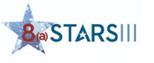

Software Modernization
Application development, modernization, sustainment, and DevSecOps.

AAGCS, a joint venture between Orgro and GCS, is a prime contractor on GSA 8(a) STARS III and provides innovative information technology and emerging technology solutions to Federal agencies.
GSA 8(a) STARS III is a Best-in-Class governmentwide acquisition contract that gives Federal agencies access to innovative IT services and emerging technology solutions from qualified 8(a) small businesses.
AAGCS combines the capabilities of Orgro and GCS to provide systems engineering, software development, cybersecurity, cloud, infrastructure, network engineering, data management, and IT program support.
AAGCS is a joint venture between Global Commerce and Services, LLC and Orgro formed specifically to perform work under the GSA 8(a) STARS III contract. The joint venture combines complementary technology, program execution, and federal mission support capabilities through one accountable prime contractor.
Primary focus: software modernization, cloud and infrastructure, cybersecurity, systems engineering, data, networks, and IT program support.
Learn More About AAGCS → Visit the AAGCS Website →Application development, modernization, sustainment, and DevSecOps.
Cloud, infrastructure, networks, migration, and enterprise operations.
Security engineering, compliance, architecture, and operational support.
Data management, analytics, systems integration, and IT program support.
IT solutions aligned to Federal mission priorities and measurable outcomes.
Access to qualified 8(a) small business IT capabilities through AAGCS.
The complementary capabilities of Orgro and GCS in one accountable joint venture.
A governmentwide contract designed for innovative IT and emerging technology.
AAGCS is a joint venture between Orgro and GCS established for the GSA 8(a) STARS III contract.
AAGCS provides software, cloud, cybersecurity, systems engineering, data, networking, and IT program support services.
Yes. AAGCS is the prime contractor on its STARS III award.
Visit aagcsllc.com or contact GCS at contracts@globalcommserv.com.
Visit AAGCS or contact GCS to discuss Federal IT and emerging technology requirements under STARS III.